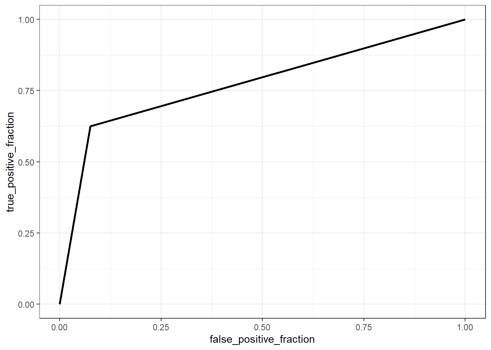

Regressão logística
Regressão logística
Regressão logística binária simples
Seja uma variável categórica com duas categorias, \(y \in \{c_1,c_2\}\), dita binária ou dicotômica, a qual suspeita-se ser dependente de uma única variável contínua ou real, \(x\), \(x \in \mathcal{R}\). Como exemplo tem-se respostas com categorias “sim” e “não” ou “sucesso” e “fracasso”. Um modelo de regressão logística visa prever a probabilidade de sucesso dado um valor de x, isto é \(p(y=sucesso|x)\). O sucesso deve ser entendido não literalmente, mas como a categoria de mais interesse a ser prevista. Obviamente a remanescente terá probabilidade complementar.
Considere o caso onde deseja-se prever se a pessoa compra ou não um iphone de última geração tomando como variável independente o seu salário. Tais categorias são codificadas respectivamente em 0 e 1.
Inicialmente alguém poderia pensar em estimar uma reta via mínimos quadrados para prever a probabilidade do indivíduo comprar o iphone segundo o seu salário, isto é:
\[ p(y=1|x) =\beta_0+\beta_1x \] Tal procedimento resultaria na regressão plotada abaixo. O problema é que a reta obtida prevê probabilidades negativas para salários menores que R$3200 reais e probabilidades maiores que 1 para salários maiores que R$19300. Tais previsões são irreais, uma vez que \(p(y) \in [0,1]\).
Para garantir previsões no domínio da probabilidade, podem ser aplicadas diversas funções. A função logit ou sigmoid é uma delas. Estas função é definida matematicamente abaixo e plotada a seguir.
\[ p(z)=\frac{1}{1+e^{-z}}=\frac{e^z}{e^z+1} \]
Aplicando um modelo linear em função da variável independente em tal função, isto é, fazendo \(z=\beta_0+\beta_1x\), obtém-se o modelo de regressão logística, conforme segue.
\[ p(y=1|x) = \frac{1}{1 + e^{-(\beta_0+\beta_1x)}} \]
O ajuste de um modelo de regressão logística para o exemplo do iphone resulta na função plotada a seguir.
Sabendo que a probabilidade da outra classe é o complementar, isto é, \(p(y=0|x)=1-p(y=1|x)\), pode-se obter o inverso da função logit, ou mais diretamente, da função de regressão logística, conforme segue.
\[ \begin{matrix} p(y=0|x)=1-p(y=1|x) \\ p(y=0|x)=1-\frac{1}{1 + e^{-(\beta_0+\beta_1x)}} \\ p(y=0|x)=\frac{1 + e^{-(\beta_0+\beta_1x)}-1}{1 + e^{-(\beta_0+\beta_1x)}} \\ p(y=0|x)=\frac{e^{-(\beta_0+\beta_1x)}}{1 + e^{-(\beta_0+\beta_1x)}} \\ \end{matrix} \]
Tomando a razão entre \(p(y=1|x)\) e \(1-p(y=1|x)\) ou \(p(y=0|x)\), chamada de razão de chance ou odds ratio, tem-se.
\[ \frac{p(y=1|x)}{1-p(y=1|x)} = e^{\beta_0+\beta_1x} \]
Tal razão tem domínio entre 0 e \(\infty\), com uma razão unitária indicando chance igual de ocorrência de ambos grupos, uma razão maior que 1 indicando maior chance de ocorrência do grupo 1 e uma razão menor que 1 indicando maior probabilidade de ocorrência do grupo 0. Aplicando logaritmo em ambos os lados do último resultado, verifica-se que o modelo de regressão logística (entenda-se aqui log como o logaritmo neperiano), obtido a partir da aplicação da função logit, pode ser concebido como um modelo de regressão linear simples para o log da razão de chance. O lado esquerdo da relação é chamado de log-odds ou logit, que viabiliza a obtenção da subtração das probabilidades em escala log, \(\text{log }\frac{p}{(1-p)} = \text{log } p - \text{log }(1-p)\).
\[ \text{log } \biggl(\frac{p(y=1|x)}{1-p(y=1|x)}\biggr) = \beta_0+\beta_1x \]
Estimativa do modelo de regressão logística
A estimativa dos coeficientes do modelo de regressão é realizada pela maximização da função de verossimilhança. Para simplificar a notação, considere \(p(y_i|x_i,\beta_0,\beta_1)=p(x_i)\).
\[ \begin{matrix} l(\beta_0,\beta_1) = \text{log } \prod_{i=1}^Np(x_i) \\ l(\beta_0,\beta_1) = \text{log } \prod_{i=1}^N p(x_i)^{y_i}\bigl[1-p(x_i)\bigr]^{1-y_i}\\ l(\beta_0,\beta_1) = \sum_{i=1}^N \text{log } \bigl\{ p(x_i)^{y_i}\bigl[1-p(x_i)\bigr]^{1-y_i} \bigr\} \\ l(\beta_0,\beta_1) = \sum_{i=1}^N y_i\text{log } p(x_i) + (1-y_i)\text{log }\bigl[1-p(x_i)\bigr] \\ l(\beta_0,\beta_1) = \sum_{i=1}^N y_i\text{log } \Bigl( \frac{p(x_i)}{1-p(x_i)} \Bigr) + \text{log }\bigl[1-p(x_i)\bigr] \\ l(\beta_0,\beta_1) = \sum_{i=1}^N y_i(\beta_0+\beta_1x_i) + \text{log } \Bigl(1- \frac{1}{1+e^{-(\beta_0+\beta_1x_i)}} \Bigr) \\ l(\beta_0,\beta_1) = \sum_{i=1}^N y_i(\beta_0+\beta_1x_i) + \text{log } \Bigl( \frac{e^{-(\beta_0+\beta_1x_i)}}{1+e^{-(\beta_0+\beta_1x_i)}} \times \frac{e^{(\beta_0+\beta_1x_i)}}{e^{(\beta_0+\beta_1x_i)}} \Bigr) \\ l(\beta_0,\beta_1) = \sum_{i=1}^N y_i(\beta_0+\beta_1x_i) + \text{log } \Bigl( \frac{1}{1+ e^{(\beta_0+\beta_1x_i)}} \Bigr) \\ l(\beta_0,\beta_1) = \sum_{i=1}^N y_i(\beta_0+\beta_1x_i) - \text{log } \bigl( 1+ e^{(\beta_0+\beta_1x_i)} \bigr) \\ \end{matrix} \]
Considerando o modelo de regressão logística em notação matricial, podemos reescrever a função do log da verossimilhança, conforme segue.
\[ l(\beta) = \sum_{i=1}^N y_i(\beta^T\mathbf{x}_i) - \text{log } \bigl( 1+ e^{(\beta^T\mathbf{x}_i)} \bigr) \\ \]
O vetor \(\beta\) considera ambos os coeficientes \(\beta = [\beta_0,\beta_1]^T\) enquanto o vetor \(\mathbf{x}_i\) considera a constante e a observação da variável regressora, \(\mathbf{x}_i = [1,x]^T\). Para maximizar o log da verossimilhança, igualamos a derivada da função a zero, isto é:
\[ \begin{matrix} \frac{\partial l(\beta)}{\partial \beta} = \frac{\partial }{\partial \beta} \sum_{i=1}^N y_i(\beta^T\mathbf{x}_i) - \text{log } \bigl( 1+ e^{(\beta^T\mathbf{x}_i)} \bigr) \\ \frac{\partial l(\beta)}{\partial \beta} = \sum_{i=1}^N y_i\mathbf{x}_i - \frac{e^{\beta^T\mathbf{x}_i}}{1+e^{\beta^T\mathbf{x}_i}}\mathbf{x}_i \\ \frac{\partial l(\beta)}{\partial \beta} = \sum_{i=1}^N y_i\mathbf{x}_i - \frac{1}{1+e^{-\beta^T\mathbf{x}_i}}\mathbf{x}_i \\ \frac{\partial l(\beta)}{\partial \beta} = \sum_{i=1}^N y_i\mathbf{x}_i - p(\mathbf{x}_i,\beta)\mathbf{x}_i \\ \frac{\partial l(\beta)}{\partial \beta} = \sum_{i=1}^N \mathbf{x}_i(y_i - p(\mathbf{x}_i,\beta)) = 0 \\ \end{matrix} \]
Tal resultado consite em um sistema de duas equações não lineares para o caso simples. Para resolver este problema pode-se usar o método de Newton-Raphson. Este requer além do gradiente a derivada segunda ou a Hessiana da função do log da verossimilhança, conforme segue.
\[ \frac{\partial^2 l(\beta)}{\partial \beta \partial\beta^T} = \sum_{i=1}^N \mathbf{x}_i\mathbf{x}_i^Tp(\mathbf{x}_i,\beta)(y_i - p(\mathbf{x}_i,\beta)) \]
Uma atualização de \(\beta\) é obtida conforme segue:
\[ \beta_{t+1}=\beta_t - \Biggl(\frac{\partial^2 l(\beta)}{\partial \beta \partial\beta^T}\Biggr)^{-1}\frac{\partial l(\beta)}{\partial \beta} \]
Considere o caso onde deseja-se prever se uma pessoa tem ou não diabetes segundo o nível de glicose. Considere as primeiras linhas de um conjunto de dados com observações de 763 pacientes.
| glucose | diabetes |
|---|---|
| 148 | pos |
| 85 | neg |
| 183 | pos |
| 89 | neg |
| 137 | pos |
| 116 | neg |
Seja um modelo de regressão logística para tal caso considerando como observações de treino 75% das observações disponíveis tomadas aleatoriamente.
Call:
glm(formula = diabetes ~ glucose, family = binomial, data = dados_treino)
Coefficients:
Estimate Std. Error z value Pr(>|z|)
(Intercept) -5.711728 0.510506 -11.19 <2e-16 ***
glucose 0.040409 0.003947 10.24 <2e-16 ***
---
Signif. codes: 0 '***' 0.001 '**' 0.01 '*' 0.05 '.' 0.1 ' ' 1
(Dispersion parameter for binomial family taken to be 1)
Null deviance: 734.03 on 571 degrees of freedom
Residual deviance: 591.50 on 570 degrees of freedom
AIC: 595.5
Number of Fisher Scoring iterations: 4O coeficiente relacionado ao nível de glicose apresenta significância estatística. No caso da regressão logística os coeficientes do modelo não podem ser diretamente interpretados considerando a probabilidade prevista, mas sim o log da razão de chance, de forma que neste caso apresentam interpretação similar aos coeficientes de regressão linear simples. Tal modelo pode ser plotado, conforme segue.
O modelo obtido no exemplo pode ser escrito conforme segue. Tal modelo é útil para prever a probabilidade de o indivíduo ter diabetes em função do seu nível de glicose.
\[ p(y=1|x) = \frac{1}{1 + e^{-(-5.712+0.040x)}} \]
Regressão logística binária múltipla
Seja o caso onde deseja-se estudar a probabilidade de sucesso de uma variável de resposta categórica binária em função de múltiplos preditores, \(x_1,x_2,\ldots,x_k\), \(p(y=1|x_1,x_2,\ldots,x_k)\).
Um modelo de regressão logística múltipla pode ser escrito conforme segue.
\[ p(y=1|x) = \frac{1}{1 + e^{-(\beta_0+\beta_1x_1+\beta_2x_2+\ldots+\beta_kx_k)}} \]
Seja a matrix de observações das variáveis preditoras \(\mathbf{X}_{[N\times (k+1)]}\), com \(\mathbf{\beta}_{[(k+1) \times 1]}\) como o vetor de coeficientes, \(\mathbf{y}_{[N]}\) o vetor de observações da resposta binária, \(\mathbf{p}_{[N]}\) o vetor de probabilidades ajustadas com i-ésimo elemento \(p(\mathbf{x}_i,\beta_{t})\) e \(\mathbf{W}_{[N\times N]}\) uma matriz diagonal de pesos com o i-ésimo elemento diagonal igual a \(p(\mathbf{x}_i,\beta_{t})(1-p(\mathbf{x}_i,\beta_{t}))\). Temos o gradiente e a hessina tomando tal notação conforme segue.
\[ \frac{\partial l(\beta)}{\partial \beta} = \mathbf{X}^T(\mathbf{y}-\mathbf{p}) \\ \] \[ \frac{\partial^2 l(\beta)}{\partial \beta \partial\beta^T} = -\mathbf{X}^T\mathbf{W}\mathbf{X} \]
A atualização no método de Newton-Raphson para \(\beta\) fica conforme segue:
\[ \beta_{t+1}=\beta_t - (\mathbf{X}^T\mathbf{W}\mathbf{X})^{-1}\mathbf{X}^T(\mathbf{y}-\mathbf{p}) \]
Considerando ainda o caso onde deseja-se prever se a pessoa tem ou não diabetes, porém, não apenas em função do nível de glicose no sangue, mas também em função da idade.
| glucose | diabetes | age |
|---|---|---|
| 148 | pos | 50 |
| 85 | neg | 31 |
| 183 | pos | 32 |
| 89 | neg | 21 |
| 137 | pos | 33 |
| 116 | neg | 30 |
Seja um modelo de regressão logística para tal caso, tomando novamente 75% das observações disponíveis parta treino. No caso múltiplo é importante padronizar as variáveis.
Call:
glm(formula = diabetes ~ scale(glucose) + scale(age), family = binomial,
data = dados_treino)
Coefficients:
Estimate Std. Error z value Pr(>|z|)
(Intercept) -0.8158 0.1044 -7.814 5.55e-15 ***
scale(glucose) 1.1456 0.1181 9.701 < 2e-16 ***
scale(age) 0.2568 0.1002 2.563 0.0104 *
---
Signif. codes: 0 '***' 0.001 '**' 0.01 '*' 0.05 '.' 0.1 ' ' 1
(Dispersion parameter for binomial family taken to be 1)
Null deviance: 734.03 on 571 degrees of freedom
Residual deviance: 584.94 on 569 degrees of freedom
AIC: 590.94
Number of Fisher Scoring iterations: 4Pode-se observar que o coeficiente para a idade é significativo, porém não tanto quanto o coeficiente do nível de glicose.
O modelo de regressão logística apresenta pressuposiçoes similares ao modelo de regressão linear, tais como: independência das observações, linearidade dos dados, homogeneidade dos erros, independência dos erros e ausência de multicolinearidade. Entretanto, como este curso é mais voltado para previsão e menos para inferência, será dada mais ênfase nas métricas de previsão para avaliar a capacidade de generalização do modelo.
Avaliação da capacidade de previsão do modelo de regressão
Conforme já discutido, o modelo de regressão logística é útil para prever a probabilidade de ocorrência de uma classe de interesse. No entanto,em aprendizado deseja-se classificar observações futuras. Para usar um modelo de regressão logística para tal fim deve-se discretizar a probabilidade considerando um valor de corte de interesse, geralmente \(p=0,5\).
\[ \biggl\{ \begin{matrix} \hat{y}=1\text{, se } p(y=1|\mathbf{x}) \geq 0,5 \\ \hat{y}=0\text{, se } p(y=1|\mathbf{x}) < 0,5 \\ \end{matrix} \]
A partir de tal discretização é possível obter a matriz de confusão, que resume todas as possíveis combinações de classificações considerando a realidade e o modelo.
| verdade/previsão | classe 0 | classe 1 |
| classe 0 | verdadeiro negativo | falso positivo |
| classe 1 | falso negativo | verdadeiro positivo |
A matriz de confusão a seguir apresenta os resultados do modelo de regressão logística aplicados aos 25% dos dados separados para teste para o exemplo de classificação de diabéticos. Pode-se observar que de 120 pessoas sem diabetes, \(y=0\), o modelo classifica corretamente 105 pessoas, resultando em 15 falsos positivos, enquanto de 71 pessoas com diabetes, o modelo classifica corretamente 36 e resulta em 35 falsos negativos.
pred
y 0 1
0 105 15
1 35 36A partir da matriz de confusão é possível calcular a acuracidade do modelo. De forma geral a acuracidade do modelo pode ser expressa considerando a proporção de acerto, conforme segue, onde TP é o número de verdadeiros positivos (true positive), TN é o número de verdadeiros negativos (true negative), FP é o número de falsos positivos (false positive), FN é o número de false negativos (false negative). De forma geral \(I(\hat{y}=y)\) é uma função indicativa que retorna 1, se veraddeira, sendo que a soma \(\sum I(\hat{y}=y)\) considera o total de classificações corretas, \(TP+TN\), sendo n o total de observações de teste. Para o exemplo a acuracidade é de 73,82%.
\[ Acc = \frac{TP+TN}{TP+TN+FP+FN} = \frac{\sum I(\hat{y}=y)}{n} \]
Além de ser possível constatar a falta de equilíbrio entre as duas classes, observa-se um alto número de indivíduos com diabetes classificados erroneamente. O desbalanceamento entre as classes, possivelmente também presente nos dados de treino, tem consequência na diferença de proporção entre falsos positivos e negativos. Devido ao desequilíbrio entre classes a acuracidade geral pode não ser a melhor métrica para avaliar a capacidade do modelo. O gráfico a seguir apresenta o modelo de regressão logística múltipla obtido.
Consideremos outras variáveis regressoras no modelo de regressão logística.
| pregnant | glucose | pressure | triceps | insulin | mass | pedigree | age | diabetes |
|---|---|---|---|---|---|---|---|---|
| 1 | 89 | 66 | 23 | 94 | 28.1 | 0.167 | 21 | neg |
| 0 | 137 | 40 | 35 | 168 | 43.1 | 2.288 | 33 | pos |
| 3 | 78 | 50 | 32 | 88 | 31.0 | 0.248 | 26 | pos |
| 2 | 197 | 70 | 45 | 543 | 30.5 | 0.158 | 53 | pos |
| 1 | 189 | 60 | 23 | 846 | 30.1 | 0.398 | 59 | pos |
| 5 | 166 | 72 | 19 | 175 | 25.8 | 0.587 | 51 | pos |
O modelo obtido foi reduzido com eliminação para trás. Pode-se observar que as variáveis massa e pedigree também contribuem para melhorar o modelo, apesar de apenas a primeira variável adicional ser significativa a 0,05, além das consideradas inicialmente.
Call:
glm(formula = diabetes ~ pregnant + glucose + mass + pedigree +
age, family = binomial, data = dados_treino)
Coefficients:
Estimate Std. Error z value Pr(>|z|)
(Intercept) -0.9736 0.1618 -6.019 1.75e-09 ***
pregnant 0.2881 0.1996 1.444 0.148873
glucose 0.9876 0.1704 5.796 6.78e-09 ***
mass 0.5711 0.1618 3.530 0.000415 ***
pedigree 0.4958 0.1733 2.861 0.004225 **
age 0.3287 0.1972 1.666 0.095622 .
---
Signif. codes: 0 '***' 0.001 '**' 0.01 '*' 0.05 '.' 0.1 ' ' 1
(Dispersion parameter for binomial family taken to be 1)
Null deviance: 374.27 on 293 degrees of freedom
Residual deviance: 268.75 on 288 degrees of freedom
AIC: 280.75
Number of Fisher Scoring iterations: 5A matriz de confusão obtida é apresentada a seguir. A acuracidade para este modelo é de 82,65%.
pred
y 0 1
0 61 5
1 12 20Em problemas de classificação da área de saúde a sensitividade a especificidade são usadas, sendo a primeira a probabilidade de prever a doença dado que a pessoa é de fato doente, enquanto a especificidade consiste na probabilidade de prever como não doente dado que a pessoa de fato não o é. Para o exemplo estudado, considerando o último modelo obtido, tem-se uma sensibilidade igual a 62,5% e uma especificidade igual a 92,42%.
\[ \biggl\{ \begin{matrix} Sens = \frac{TP}{TP+FN} \\ Spec = \frac{TN}{TN+FP} \end{matrix} \]
A curva ROC (receiver operating characteristics) mede graficamente a relação entre tais medidas e é plotada para o exemplo a seguir. Pode-se observar que para obter uma especificidade igual a 92% tem-se 62.5% de sensitividade.

A área abaixo da curva ROC também é utilizada como métrica de capacidade de previsão. Para o exemplo a curva apresentada tem área igual a 0,775 abaixo dela.
Regressão logística multinomial
Considere o caso onde a variável dependente apresenta mais de duas classes, \(y \in \{c_1,c_2,\ldots,c_Q\}\), \(Q>2\). Um modelo de regressão logística multinomial simples pode ser escrito conforme segue.
\[ \begin{matrix} \text{log } \biggl(\frac{p(y=1|x)}{p(y=Q|x)}\biggr) = \beta_{10}+\beta_1x \\ \text{log } \biggl(\frac{p(y=2|x)}{p(y=Q|x)}\biggr) = \beta_{20}+\beta_2x \\ \vdots \\ \text{log } \biggl(\frac{p(y=Q-1|x)}{p(y=Q|x)}\biggr) = \beta_{(Q-1)0}+\beta_{(Q-1)}x \\ \end{matrix} \]
O modelo foi especificado considerando \(Q-1\) transformações logit. A classe considerada no denominador é definida arbitrariamente. De forma análoga ao modelo binário, tem-se:
\[ \begin{matrix} p(y=q|x) = \frac{1}{1 + \sum_{l=1}^{Q-1} e^{-(\beta_{q0}+\beta_qx)}} \text{, } q=1,\ldots,Q-1 \\ p(y=Q|x)=\frac{1}{1 + \sum_{l=1}^{Q-1} e^{\beta_{q0}+\beta_qx}} \\ \end{matrix} \]
O modelo de regressão logística multinomial simples pode ser obviamente ser estendido ao caso múltiplo.
Assim como na regressão linear para respostas contínuas a regressão logística também permite a aplicação de técnicas de regularização como regressão logística rígida e LASSO. Ademais, é possível cnsiderar termos polinomiais e de interação e até mesmo expansões de base, como splines e GAM.